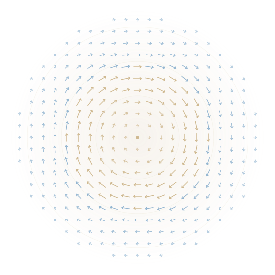

SOT
Spin–orbitronics
Field-free switching, giant torques in topological insulators, and voltage-controlled magnetic anisotropy for energy-efficient magnetic memory.
PURDUE UNIVERSITY · SPINUC LAB
Magnetism. Spintronics. Quantum information.
We explore how spins interact, move, and carry information—connecting condensed-matter physics with new ways to compute and sense.

01 / OUR RESEARCH
We treat spin as both a physical degree of freedom and an engineering resource—electrical, thermal, and optical control of magnetic order for memory, sensing, and unconventional computing.
Field-free switching, giant torques in topological insulators, and voltage-controlled magnetic anisotropy for energy-efficient magnetic memory.
Room-temperature skyrmions, 90° walls in twisted magnets, and texture-based platforms for topological quantum information.
NV centers and boron vacancies in hBN as probes of magnons, electric fields, and high-field spin dynamics.
Picosecond octupole fluctuations, electrically tunable p-bits, and all-antiferromagnetic tunnel junctions.
NSF CAREER program on spin–magnon hybrid quantum devices: local control of defect qubits and chiral condensed-matter sensing.
Probabilistic bits, synaptic plasticity from tunable magnetodynamics, and phase-field models of quantum metamaterials.
02 / SELECTED WORK
A selection of work spanning magnetic textures, spin control, and quantum devices.
03 / OUR PEOPLE
SPINUC Lab brings together theory and experiment in spintronics, quantum sensing, and scientific computing.

Associate Professor of ECE; area chair for Microelectronics and Nanotechnology.

Theory of spin–phonon relaxation in two-dimensional quantum defects.

Chiral spin textures, skyrmion–Majorana platforms, and octupole p-bits.

Phase-field modeling, chiral antiferromagnet spin dynamics, and scientific computing.
04 / FROM THE LAB
Collaboration on size-dependent band-tail localization in oxide semiconductors, with group members Aravindh Shankar and Sanjeev Khare, posted as arXiv:2608.09283.
Noncollinear spin textures and 90° domain walls in twisted XY magnets, with Shiva T. Konakanchi and Sanjeev Khare among the authors: arXiv:2606.00604.